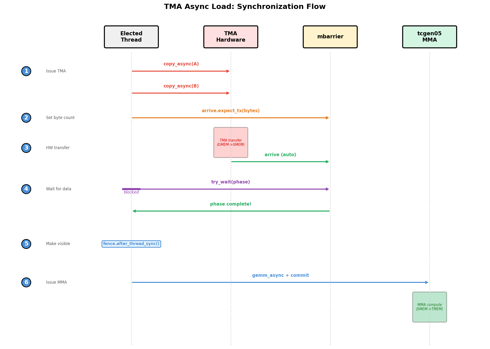

7. GEMM Steps 4–6: TMA, Pipelining, and Persistent Kernels¶
This chapter covers three major optimizations that transform a naive GEMM into a high-performance kernel: asynchronous TMA loads, software pipelining, and persistent kernel scheduling. Each builds directly on the previous step.
7.1. Step 4: TMA Async Load — 123x Speedup¶
The single biggest optimization: replacing synchronous Tx.copy with
TMA hardware. One thread issues the command, the hardware does the rest.
We demonstrate with M=N=K=4096.
Expected performance: ~5.8 ms (123x faster than Step 1)
7.1.1. What You Will Learn¶
Replacing synchronous
Tx.copywith asynchronous TMA:Tx.copy_async(..., dispatch="tma")Single-thread TMA dispatch via
elect_sync()mbarrier-based byte-counting synchronization:
arrive.expect_tx/try_waitTMA store writeback: TMEM -> RF -> SMEM -> TMA store -> GMEM
7.1.2. The Key Change¶
The diff from Step 1 is small but transformative:
Before (Step 1) — all 128 threads copy:
with Tx.cta():
Tx.copy(Asmem[:,:], A[m_st:m_st+BLK_M, k_st:k_st+BLK_K]) # all 128 threads
Tx.copy(Bsmem[:,:], B[n_st:n_st+BLK_N, k_st:k_st+BLK_K])
Tx.cuda.cta_sync()
After (Step 4) — single thread issues TMA:
with Tx.thread()[elect_sync()]: # hardware selects 1 thread
Tx.copy_async(Asmem, A[...], dispatch="tma")
Tx.copy_async(Bsmem, B[...], dispatch="tma")
mbarrier.arrive.expect_tx(byte_count) # tell barrier how many bytes
mbarrier.try_wait(phase) # all threads wait until TMA completes
Why 123x faster: Frees 127 threads from doing loads. The hardware TMA engine saturates memory bandwidth independently.
7.1.3. TMA Synchronization Flow¶

Fig. 7.1.1 TMA Async Load: Synchronization Flow¶
Elected thread issues
copy_asyncfor A and BElected thread calls
arrive.expect_tx(bytes)to tell the mbarrier how many bytes to expectTMA hardware automatically arrives on the mbarrier when transfer completes
All threads call
try_wait(phase)to block until data is readyAfter wait,
fence.after_thread_sync()makes SMEM data visible to MMA hardware
7.1.4. TMA Store Writeback¶
Instead of writing directly from registers to GMEM (slow, uncoalesced), Step 4 also introduces TMA store:
Read TMEM -> registers (warpgroup read)
Cast fp32 -> fp16 in registers
Write registers -> Dsmem (shared memory, with swizzled layout)
fence.proxy_async("shared::cta")— flush SMEM writesTMA store:
Tx.copy_async(D[...], Dsmem[:,:], dispatch="tma")Wait:
cp_async.bulk.commit_group()+cp_async.bulk.wait_group(0)
TMA loads signal completion via mbarrier (byte counting). TMA stores use a different mechanism — commit group + wait group.
7.1.5. Complete Implementation¶
import tvm
from tvm.script import tirx as Tx
from tvm.tirx.layout import S, TCol, TileLayout, TLane, tid_in_wg
from tvm.tirx.op_dispatch.cuda.tma_utils import SwizzleMode, tma_shared_layout
Constants and swizzled layouts for A, B, and D tiles:
a_type = tvm.DataType("float16")
b_type = tvm.DataType("float16")
d_type = tvm.DataType("float16")
acc_type = tvm.DataType("float32")
M, N, K = 4096, 4096, 4096
BLK_M, BLK_N, BLK_K = 128, 128, 64
MMA_M, MMA_N, MMA_K = 128, 128, 16
F16_SIZE = 2
A_layout = tma_shared_layout(a_type, SwizzleMode.SWIZZLE_128B_ATOM, (BLK_M, BLK_K))
B_layout = tma_shared_layout(b_type, SwizzleMode.SWIZZLE_128B_ATOM, (BLK_N, BLK_K))
D_layout = tma_shared_layout(d_type, SwizzleMode.SWIZZLE_128B_ATOM, (BLK_M, BLK_N))
# SMEM now includes Dsmem for TMA store writeback
SMEM_SIZE = 1024 + (BLK_M * BLK_K + BLK_N * BLK_K + BLK_M * BLK_N) * F16_SIZE
The kernel — TMA async load replaces synchronous copy, TMA store replaces direct GMEM writes:
@Tx.prim_func(tirx=True)
def hgemm_v4(
A: Tx.Buffer((M, K), a_type),
B: Tx.Buffer((N, K), b_type),
D: Tx.Buffer((M, N), d_type),
):
with Tx.kernel():
bx, by = Tx.cta_id([M // BLK_M, N // BLK_N], parent="kernel")
wg_id = Tx.warpgroup_id([1], parent="cta")
warp_id = Tx.warp_id([4], parent="warpgroup")
lane_id = Tx.thread_id([32], parent="warp")
# --- SMEM allocation (now includes Dsmem for TMA store) ---
buf = Tx.alloc_buffer([SMEM_SIZE], "uint8", scope="shared.dyn")
pool = Tx.meta_var(Tx.PoolAllocator(buf.data))
tmem_addr = pool.alloc((1,), "uint32")
tma_bar = pool.alloc((1,), "uint64")
mma_bar = pool.alloc((1,), "uint64")
pool.move_base_to(1024)
Asmem = pool.alloc((BLK_M, BLK_K), a_type, layout=A_layout)
Bsmem = pool.alloc((BLK_N, BLK_K), b_type, layout=B_layout)
Dsmem = pool.alloc((BLK_M, BLK_N), d_type, layout=D_layout)
# --- Barrier + TMEM init ---
if warp_id == 0 and lane_id == 0:
Tx.ptx.mbarrier.init(mma_bar.ptr_to([0]), 1)
Tx.ptx.mbarrier.init(tma_bar.ptr_to([0]), 1)
if warp_id == 0:
Tx.ptx.tcgen05.alloc(Tx.address_of(tmem_addr), n_cols=512, cta_group=1)
Tx.ptx.fence.proxy_async("shared::cta")
Tx.ptx.fence.mbarrier_init()
Tx.cuda.cta_sync()
tmem = Tx.decl_buffer(
(128, 512), "float32", scope="tmem", allocated_addr=tmem_addr[0],
layout=TileLayout(S[(128, 512) : (1@TLane, 1@TCol)])
)
m_st = Tx.meta_var(bx * BLK_M)
n_st = Tx.meta_var(by * BLK_N)
phase_tma = Tx.local_scalar("int32")
phase_mma = Tx.local_scalar("int32")
phase_tma = 0
phase_mma = 0
# --- Inline helpers ---
@Tx.inline
def tma_load(k_st):
tma_config = Tx.meta_var({
"dispatch": "tma", "cta_group": 1,
"mbar": tma_bar.ptr_to([0])
})
Tx.copy_async(Asmem[:, :],
A[m_st : m_st + BLK_M, k_st : k_st + BLK_K],
**tma_config)
Tx.copy_async(Bsmem[:, :],
B[n_st : n_st + BLK_N, k_st : k_st + BLK_K],
**tma_config)
Tx.ptx.mbarrier.arrive.expect_tx(
Tx.address_of(tma_bar),
(BLK_M * BLK_K + BLK_N * BLK_K) * F16_SIZE
)
@Tx.inline
def mma(accum):
Tx.gemm_async(
tmem[:, :BLK_N], Asmem[:, :], Bsmem[:, :],
accum=accum, dispatch="tcgen05", cta_group=1
)
Tx.ptx.tcgen05.commit(mma_bar.ptr_to([0]), cta_group=1)
# --- K-loop with TMA async ---
tid = Tx.meta_var(warp_id * 32 + lane_id)
for k in range(K // BLK_K):
k_st = Tx.meta_var(k * BLK_K)
# Single thread issues TMA load
with Tx.thread(parent="warpgroup")[tid == 0]:
tma_load(k_st)
# Wait for TMA to finish
Tx.ptx.mbarrier.try_wait(tma_bar.ptr_to([0]), phase_tma)
Tx.ptx.tcgen05.fence.after_thread_sync()
# Single thread issues MMA
with Tx.thread(parent="warpgroup")[tid == 0]:
mma(accum=k != 0)
# Wait for MMA to finish
Tx.ptx.mbarrier.try_wait(mma_bar.ptr_to([0]), phase_mma)
phase_tma ^= 1
phase_mma ^= 1
# --- TMA Store Writeback ---
Dreg = Tx.alloc_local((BLK_N,), acc_type)
Dreg_f16 = Tx.alloc_local((BLK_N,), d_type)
Dreg_wg = Dreg.view(128, BLK_N,
layout=TileLayout(S[(128, BLK_N) : (1@tid_in_wg, 1)]))
# Read TMEM -> registers
with Tx.warpgroup():
Tx.copy(Dreg_wg[:, :], tmem[:, :BLK_N])
# Cast fp32 -> fp16
with Tx.thread():
Tx.cast(Dreg_f16[:], Dreg[:])
# Write registers -> Dsmem (each thread writes its row)
with Tx.thread():
Tx.copy(Dsmem[warp_id * 32 + lane_id, 0:BLK_N], Dreg_f16[:])
Tx.cuda.cta_sync()
Tx.ptx.fence.proxy_async("shared::cta")
# TMA store: Dsmem -> GMEM
with Tx.thread(parent="warpgroup")[tid == 0]:
Tx.copy_async(D[m_st : m_st + BLK_M, n_st : n_st + BLK_N],
Dsmem[:, :], dispatch="tma")
Tx.ptx.cp_async.bulk.commit_group()
Tx.ptx.cp_async.bulk.wait_group(0)
# --- Deallocate TMEM ---
Tx.cuda.cta_sync()
if warp_id == 0:
Tx.ptx.tcgen05.relinquish_alloc_permit(cta_group=1)
Tx.ptx.tcgen05.dealloc(tmem_addr[0], n_cols=512, cta_group=1)
Compile and run:
import torch
target = tvm.target.Target("cuda -arch=sm_100a")
with target:
mod = tvm.IRModule({"main": hgemm_v4})
lib = tvm.compile(mod, target=target, tir_pipeline="tirx")
device = torch.device('cuda') # gpu(0)
A_tensor = torch.randn(M, K, dtype=torch.float16, device=device)
B_tensor = torch.randn(N, K, dtype=torch.float16, device=device)
D_tensor = torch.zeros(M, N, dtype=torch.float16, device=device)
f = lib["main"]
f(tvm.runtime.from_dlpack(A_tensor), tvm.runtime.from_dlpack(B_tensor),
tvm.runtime.from_dlpack(D_tensor))
D_ref = (A_tensor.float() @ B_tensor.float().T).half()
max_err = float((D_tensor - D_ref).abs().max())
print(f"Step 4 TMA Async GEMM: M={M}, N={N}, K={K}")
print(f"Max error vs torch reference: {max_err:.6f}")
assert max_err < 64.0, f"FAIL: max_err={max_err}"
print("PASS")
# Benchmark
args = [tvm.runtime.from_dlpack(A_tensor), tvm.runtime.from_dlpack(B_tensor), tvm.runtime.from_dlpack(D_tensor)]
for _ in range(10):
f(*args)
start = torch.cuda.Event(enable_timing=True)
end = torch.cuda.Event(enable_timing=True)
start.record()
for _ in range(100):
f(*args)
end.record()
torch.cuda.synchronize()
ms = start.elapsed_time(end) / 100
tflops = 2 * M * N * K / ms / 1e9
print(f"Performance: {ms:.3f} ms, {tflops:.1f} TFLOPS")
7.1.6. Key Points¶
TMA config:
{"dispatch": "tma", "cta_group": 1, "mbar": tma_bar.ptr_to([0])}Byte count:
(BLK_M * BLK_K + BLK_N * BLK_K) * 2bytes (fp16 = 2 bytes per element)mbarrier init:
init(tma_bar.ptr_to([0]), 1)— 1 expected arrival fromexpect_tx.``@Tx.inline``: Helper functions are inlined at compile time and can capture outer variables.
TMA store: Must be followed by
commit_group()+wait_group(0)— without waiting, the next operation may overwrite Dsmem before the store finishes.
7.1.7. Common Bugs¶
7.1.7.1. Missing cta_sync() Before TMEM Read¶
If the TMA+MMA loop runs inside an elect_sync or tid == 0 scope,
only 1 thread executes it. Other threads skip ahead to the TMEM read.
Without a cta_sync() after the loop, fence.after_thread_sync()
doesn’t cover MMA writes for those threads.
Symptom: Mismatched elements (stale/zero TMEM data).
Fix: Add Tx.cuda.cta_sync() between the K-loop and the fence,
outside any thread-guarded scope.
Now that we have TMA async loads handling data movement efficiently, the next bottleneck is that the MMA unit still sits idle while waiting for each TMA transfer to complete. The solution is to overlap loading and computing using software pipelining.
7.2. Step 5: Software Pipeline (PIPE_DEPTH=2)¶
Without pipelining, the kernel alternates between loading and computing — the MMA sits idle while TMA loads data, and vice versa. Software pipelining overlaps these operations using double-buffered shared memory. We verify with M=N=256, K=128.
7.2.1. What You Will Learn¶
Overlapping TMA loads with MMA computation using double buffering
Multi-buffered shared memory:
Asmem[stage, :, :]Pipeline stage and phase tracking
Prefetch pattern: load first stages before entering main loop
7.2.2. Background¶
Without pipelining (Step 4):
[TMA Load 0] [MMA 0] [TMA Load 1] [MMA 1] [TMA Load 2] [MMA 2] ...
With double buffering (PIPE_DEPTH=2):
TMA: [Load 0] [Load 1] [Load 2] [Load 3] ...
MMA: [Compute 0] [Compute 1] [Compute 2] ...
While MMA reads from SMEM stage 0, TMA loads into SMEM stage 1, and vice versa.

Fig. 7.2.1 Pipeline PIPE_DEPTH=2¶
7.2.3. Implementation¶
The key structural changes from Step 4:
import tvm
from tvm.script import tirx as Tx
from tvm.tirx.layout import S, TCol, TileLayout, TLane, tid_in_wg
from tvm.tirx.op_dispatch.cuda.tma_utils import SwizzleMode, tma_shared_layout
The kernel is wrapped in a function hgemm_v5(M, N, K) that returns a
TIRX kernel for given dimensions. The PIPE_DEPTH=2 constant controls
the number of pipeline stages (double buffering):
PIPE_DEPTH = 2
def hgemm_v5(M, N, K):
a_type = tvm.DataType("float16")
b_type = tvm.DataType("float16")
d_type = tvm.DataType("float16")
acc_type = tvm.DataType("float32")
F16_SIZE = 2
BLK_M, BLK_N, BLK_K = 128, 128, 64
K_TILES = K // BLK_K
# Double-buffered layouts: first dimension is pipeline stage
A_layout = tma_shared_layout(a_type, SwizzleMode.SWIZZLE_128B_ATOM,
(PIPE_DEPTH, BLK_M, BLK_K))
B_layout = tma_shared_layout(b_type, SwizzleMode.SWIZZLE_128B_ATOM,
(PIPE_DEPTH, BLK_N, BLK_K))
@Tx.prim_func(tirx=True)
def kernel(
A: Tx.Buffer((M, K), a_type),
B: Tx.Buffer((N, K), b_type),
D: Tx.Buffer((M, N), d_type),
):
with Tx.kernel():
bx, by = Tx.cta_id([M // BLK_M, N // BLK_N], parent="kernel")
wg_id = Tx.warpgroup_id([1], parent="cta")
warp_id = Tx.warp_id([4], parent="warpgroup")
lane_id = Tx.thread_id([32], parent="warp")
# --- SMEM allocation ---
pool = Tx.PoolAllocator()
tmem_addr = pool.alloc((1,), "uint32")
# Double-buffered barriers: one per pipeline stage
tma_bar = pool.alloc((PIPE_DEPTH,), "uint64", align=8)
mma_bar = pool.alloc((PIPE_DEPTH,), "uint64", align=8)
pool.move_base_to(1024)
Asmem = pool.alloc((PIPE_DEPTH, BLK_M, BLK_K), a_type, layout=A_layout)
Bsmem = pool.alloc((PIPE_DEPTH, BLK_N, BLK_K), b_type, layout=B_layout)
pool.commit()
# Initialize barriers for each stage
if warp_id == 0:
if lane_id == 0:
for s in range(PIPE_DEPTH):
Tx.ptx.mbarrier.init(tma_bar.ptr_to([s]), 1)
Tx.ptx.mbarrier.init(mma_bar.ptr_to([s]), 1)
if warp_id == 0:
Tx.ptx.tcgen05.alloc(Tx.address_of(tmem_addr), n_cols=512, cta_group=1)
Tx.ptx.fence.proxy_async("shared::cta")
Tx.ptx.fence.mbarrier_init()
Tx.cuda.cta_sync()
tmem = Tx.decl_buffer(
(128, 512), acc_type, scope="tmem", allocated_addr=tmem_addr[0],
layout=TileLayout(S[(128, 512) : (1@TLane, 1@TCol)])
)
m_st = Tx.meta_var(bx * BLK_M)
n_st = Tx.meta_var(by * BLK_N)
phase_tma: Tx.int32
phase_mma: Tx.int32
phase_tma = 0
phase_mma = 0
@Tx.inline
def tma_load(stage, k_offset):
tma_config = Tx.meta_var({
"dispatch": "tma", "cta_group": 1,
"mbar": tma_bar.ptr_to([stage])
})
Tx.copy_async(Asmem[stage, :, :],
A[m_st:m_st+BLK_M, k_offset:k_offset+BLK_K],
**tma_config)
Tx.copy_async(Bsmem[stage, :, :],
B[n_st:n_st+BLK_N, k_offset:k_offset+BLK_K],
**tma_config)
Tx.ptx.mbarrier.arrive.expect_tx(
tma_bar.ptr_to([stage]),
(BLK_M * BLK_K + BLK_N * BLK_K) * 2)
@Tx.inline
def mma(stage, accum):
Tx.gemm_async(tmem[:, :BLK_N], Asmem[stage, :, :], Bsmem[stage, :, :],
accum=accum, dispatch="tcgen05", cta_group=1)
Tx.ptx.tcgen05.commit(mma_bar.ptr_to([stage]), cta_group=1)
tid = Tx.meta_var(warp_id * 32 + lane_id)
# === Prefetch: load first PIPE_DEPTH stages ===
with Tx.thread(parent="warpgroup")[tid == 0]:
for s in range(min(PIPE_DEPTH, K_TILES)):
tma_load(s, s * BLK_K)
# === Main loop ===
for k in range(K_TILES):
stage = k % PIPE_DEPTH
# Wait for TMA to finish loading this stage
Tx.ptx.mbarrier.try_wait(tma_bar.ptr_to([stage]), phase_tma)
Tx.ptx.tcgen05.fence.after_thread_sync()
# MMA on this stage's data
with Tx.thread(parent="warpgroup")[tid == 0]:
mma(stage, accum=(k != 0))
Tx.ptx.mbarrier.try_wait(mma_bar.ptr_to([stage]), phase_mma)
# Issue next prefetch load (k + PIPE_DEPTH)
next_k = k + PIPE_DEPTH
if next_k < K_TILES:
with Tx.thread(parent="warpgroup")[tid == 0]:
tma_load(stage, next_k * BLK_K)
# Phase flips when stage wraps around
if stage == PIPE_DEPTH - 1:
phase_tma ^= 1
phase_mma ^= 1
# === Writeback: TMEM -> RF -> GMEM ===
Dreg = Tx.alloc_local((BLK_N,), acc_type)
Dreg_f16 = Tx.alloc_local((BLK_N,), d_type)
Dreg_wg = Dreg.view(128, BLK_N,
layout=TileLayout(S[(128, BLK_N) : (1@tid_in_wg, 1)]))
with Tx.warpgroup():
Tx.copy(Dreg_wg[:, :], tmem[:, :BLK_N])
with Tx.thread():
Tx.cast(Dreg_f16[:], Dreg[:])
m_thr = Tx.meta_var(m_st + warp_id * 32 + lane_id)
Tx.copy(D[m_thr, n_st : n_st + BLK_N], Dreg_f16[:])
# Deallocate TMEM
Tx.cuda.cta_sync()
if warp_id == 0:
Tx.ptx.tcgen05.relinquish_alloc_permit(cta_group=1)
Tx.ptx.tcgen05.dealloc(tmem_addr[0], n_cols=512, cta_group=1)
return kernel
Compile and run (M=N=256, K=128 – two tiles per dimension with two K iterations – to verify correctness):
import torch
M, N, K = 256, 256, 128
kernel = hgemm_v5(M, N, K)
target = tvm.target.Target("cuda -arch=sm_100a")
with target:
mod = tvm.IRModule({"main": kernel})
lib = tvm.compile(mod, target=target, tir_pipeline="tirx")
device = torch.device('cuda') # gpu(0)
A_tensor = torch.randn(M, K, dtype=torch.float16, device=device)
B_tensor = torch.randn(N, K, dtype=torch.float16, device=device)
D_tensor = torch.zeros(M, N, dtype=torch.float16, device=device)
f = lib["main"]
f(tvm.runtime.from_dlpack(A_tensor), tvm.runtime.from_dlpack(B_tensor),
tvm.runtime.from_dlpack(D_tensor))
D_ref = (A_tensor.float() @ B_tensor.float().T).half()
max_err = float((D_tensor - D_ref).abs().max())
print(f"Step 5 Software Pipeline: M={M}, N={N}, K={K}")
print(f"Max error vs torch reference: {max_err:.6f}")
assert max_err < 1.0, f"FAIL: max_err={max_err}"
print("PASS")
# Benchmark
args = [tvm.runtime.from_dlpack(A_tensor), tvm.runtime.from_dlpack(B_tensor), tvm.runtime.from_dlpack(D_tensor)]
for _ in range(10):
f(*args)
start = torch.cuda.Event(enable_timing=True)
end = torch.cuda.Event(enable_timing=True)
start.record()
for _ in range(100):
f(*args)
end.record()
torch.cuda.synchronize()
ms = start.elapsed_time(end) / 100
tflops = 2 * M * N * K / ms / 1e9
print(f"Performance: {ms:.3f} ms, {tflops:.1f} TFLOPS")
7.2.4. Pipeline Mechanics¶
The pipeline works in three phases:
1. Prefetch: Before the main loop, load the first PIPE_DEPTH
stages:
for s in range(min(PIPE_DEPTH, K_TILES)):
tma_load(s, s * BLK_K)
2. Main loop: For each K tile, wait for its data, compute, and issue the next load:
stage = k % PIPE_DEPTH
wait(tma_bar[stage], phase) # Data ready
mma(stage, accum) # Compute
wait(mma_bar[stage], phase) # MMA done
tma_load(stage, next_k * BLK_K) # Start next load (reuses this stage's buffer)
3. Phase management: Each barrier has a phase that flips after all
arrivals. Since we cycle through PIPE_DEPTH stages, the phase flips
every PIPE_DEPTH iterations:
if stage == PIPE_DEPTH - 1:
phase_tma ^= 1
phase_mma ^= 1
With pipelining, TMA and MMA now overlap within a single tile. But for large matrices, we still launch one CTA per output tile, leading to excessive launch overhead and poor L2 cache utilization. Persistent kernels address this by having a fixed number of long-running CTAs that each process multiple tiles in a cache-friendly order.
7.3. Step 6: Persistent Kernel + Tile Scheduler¶
In Steps 3-5, each CTA computes one output tile. For large matrices (M=N=4096 → 1024 CTAs), the GPU must launch and schedule many CTAs, and adjacent CTAs don’t share L2 cache lines. Persistent kernels solve both problems. We verify with M=N=1024, K=128.
7.3.1. What You Will Learn¶
Persistent kernel pattern:
SM_COUNTCTAs that each loop over multiple tilesClusterPersistentScheduler2Dfor L2-cache-friendly tile orderingWhy persistent kernels improve performance for large matrices
7.3.2. Background¶
A persistent kernel launches exactly SM_COUNT=148 CTAs (one per SM
on B200). Each CTA loops over multiple tiles using a tile scheduler that
orders them for L2 cache locality — processing nearby tiles together so
they share cached data.
bx = Tx.cta_id([SM_COUNT], parent="kernel") # 1D grid, one CTA per SM
tile_scheduler = ClusterPersistentScheduler2D(
"ts",
num_m_tiles=M // BLK_M,
num_n_tiles=N // BLK_N,
l2_group_size=8, # Group 8 nearby tiles together
num_clusters=SM_COUNT
)
tile_scheduler.init(bx)
7.3.3. Implementation¶
The structure combines Step 5’s pipeline with a tile-level outer loop:
import tvm
from tvm.script import tirx as Tx
from tvm.tirx.layout import S, TCol, TileLayout, TLane, tid_in_wg
from tvm.tirx.op_dispatch.cuda.tma_utils import SwizzleMode, tma_shared_layout
from tvm.tirx.tile_scheduler import ClusterPersistentScheduler2D
The kernel function now takes SM_COUNT as a grid dimension instead
of (M//BLK_M, N//BLK_N), and uses a ClusterPersistentScheduler2D
to assign tiles to CTAs:
SM_COUNT = 148 # Number of SMs on NVIDIA B200 GPU
PIPE_DEPTH = 2
def hgemm_v6(M, N, K):
a_type = tvm.DataType("float16")
b_type = tvm.DataType("float16")
d_type = tvm.DataType("float16")
acc_type = tvm.DataType("float32")
F16_SIZE = 2
BLK_M, BLK_N, BLK_K = 128, 128, 64
K_TILES = K // BLK_K
A_layout = tma_shared_layout(a_type, SwizzleMode.SWIZZLE_128B_ATOM,
(PIPE_DEPTH, BLK_M, BLK_K))
B_layout = tma_shared_layout(b_type, SwizzleMode.SWIZZLE_128B_ATOM,
(PIPE_DEPTH, BLK_N, BLK_K))
@Tx.prim_func(tirx=True)
def kernel(
A: Tx.Buffer((M, K), a_type),
B: Tx.Buffer((N, K), b_type),
D: Tx.Buffer((M, N), d_type),
):
with Tx.kernel():
# 1D grid: one CTA per SM (not a 2D grid anymore!)
bx = Tx.cta_id([SM_COUNT], parent="kernel")
wg_id = Tx.warpgroup_id([1], parent="cta")
warp_id = Tx.warp_id([4], parent="warpgroup")
lane_id = Tx.thread_id([32], parent="warp")
# --- SMEM allocation (same as Step 5) ---
pool = Tx.PoolAllocator()
tmem_addr = pool.alloc((1,), "uint32")
tma_bar = pool.alloc((PIPE_DEPTH,), "uint64", align=8)
mma_bar = pool.alloc((PIPE_DEPTH,), "uint64", align=8)
pool.move_base_to(1024)
Asmem = pool.alloc((PIPE_DEPTH, BLK_M, BLK_K), a_type, layout=A_layout)
Bsmem = pool.alloc((PIPE_DEPTH, BLK_N, BLK_K), b_type, layout=B_layout)
pool.commit()
# --- Barrier + TMEM init (same as Step 5) ---
if warp_id == 0 and lane_id == 0:
for s in range(PIPE_DEPTH):
Tx.ptx.mbarrier.init(tma_bar.ptr_to([s]), 1)
Tx.ptx.mbarrier.init(mma_bar.ptr_to([s]), 1)
if warp_id == 0:
Tx.ptx.tcgen05.alloc(Tx.address_of(tmem_addr), n_cols=512, cta_group=1)
Tx.ptx.fence.proxy_async("shared::cta")
Tx.ptx.fence.mbarrier_init()
Tx.cuda.cta_sync()
tmem = Tx.decl_buffer(
(128, 512), acc_type, scope="tmem", allocated_addr=tmem_addr[0],
layout=TileLayout(S[(128, 512) : (1@TLane, 1@TCol)])
)
# Tile scheduler: assigns tiles to CTAs in L2-friendly order
tile_scheduler = ClusterPersistentScheduler2D(
"ts",
num_m_tiles=M // BLK_M,
num_n_tiles=N // BLK_N,
l2_group_size=8,
num_clusters=SM_COUNT
)
tile_scheduler.init(bx)
tid = Tx.meta_var(warp_id * 32 + lane_id)
@Tx.inline
def tma_load(stage, k_offset, m_st, n_st):
tma_config = Tx.meta_var({
"dispatch": "tma", "cta_group": 1,
"mbar": tma_bar.ptr_to([stage])
})
Tx.copy_async(Asmem[stage, :, :],
A[m_st:m_st+BLK_M, k_offset:k_offset+BLK_K],
**tma_config)
Tx.copy_async(Bsmem[stage, :, :],
B[n_st:n_st+BLK_N, k_offset:k_offset+BLK_K],
**tma_config)
Tx.ptx.mbarrier.arrive.expect_tx(
tma_bar.ptr_to([stage]),
(BLK_M * BLK_K + BLK_N * BLK_K) * 2)
@Tx.inline
def mma(stage, accum):
Tx.gemm_async(tmem[:, :BLK_N], Asmem[stage, :, :], Bsmem[stage, :, :],
accum=accum, dispatch="tcgen05", cta_group=1)
Tx.ptx.tcgen05.commit(mma_bar.ptr_to([stage]), cta_group=1)
# === Outer loop: iterate over tiles ===
while tile_scheduler.valid():
# Get current tile position from scheduler
m_st = Tx.meta_var(tile_scheduler.m_idx * BLK_M)
n_st = Tx.meta_var(tile_scheduler.n_idx * BLK_N)
# === Inner loop: same pipeline as Step 5 ===
phase_tma: Tx.int32
phase_mma: Tx.int32
phase_tma = 0
phase_mma = 0
# Prefetch first PIPE_DEPTH stages
with Tx.thread(parent="warpgroup")[tid == 0]:
for s in range(min(PIPE_DEPTH, K_TILES)):
tma_load(s, s * BLK_K, m_st, n_st)
# Main K-loop
for k in range(K_TILES):
stage = k % PIPE_DEPTH
Tx.ptx.mbarrier.try_wait(tma_bar.ptr_to([stage]), phase_tma)
Tx.ptx.tcgen05.fence.after_thread_sync()
with Tx.thread(parent="warpgroup")[tid == 0]:
mma(stage, accum=(k != 0))
Tx.ptx.mbarrier.try_wait(mma_bar.ptr_to([stage]), phase_mma)
next_k = k + PIPE_DEPTH
if next_k < K_TILES:
with Tx.thread(parent="warpgroup")[tid == 0]:
tma_load(stage, next_k * BLK_K, m_st, n_st)
if stage == PIPE_DEPTH - 1:
phase_tma ^= 1
phase_mma ^= 1
# === Writeback: TMEM -> RF -> GMEM ===
Dreg = Tx.alloc_local((BLK_N,), acc_type)
Dreg_f16 = Tx.alloc_local((BLK_N,), d_type)
Dreg_wg = Dreg.view(128, BLK_N,
layout=TileLayout(S[(128, BLK_N) : (1@tid_in_wg, 1)]))
with Tx.warpgroup():
Tx.copy(Dreg_wg[:, :], tmem[:, :BLK_N])
with Tx.thread():
Tx.cast(Dreg_f16[:], Dreg[:])
m_thr = Tx.meta_var(m_st + warp_id * 32 + lane_id)
Tx.copy(D[m_thr, n_st : n_st + BLK_N], Dreg_f16[:])
tile_scheduler.next_tile() # Move to next tile
# Deallocate TMEM
Tx.cuda.cta_sync()
if warp_id == 0:
Tx.ptx.tcgen05.relinquish_alloc_permit(cta_group=1)
Tx.ptx.tcgen05.dealloc(tmem_addr[0], n_cols=512, cta_group=1)
return kernel
Compile and run (M=N=1024, K=128 – larger matrix to exercise the persistent tile loop):
import torch
M, N, K = 1024, 1024, 128
kernel = hgemm_v6(M, N, K)
target = tvm.target.Target("cuda -arch=sm_100a")
with target:
mod = tvm.IRModule({"main": kernel})
lib = tvm.compile(mod, target=target, tir_pipeline="tirx")
device = torch.device('cuda') # gpu(0)
A_tensor = torch.randn(M, K, dtype=torch.float16, device=device)
B_tensor = torch.randn(N, K, dtype=torch.float16, device=device)
D_tensor = torch.zeros(M, N, dtype=torch.float16, device=device)
f = lib["main"]
f(tvm.runtime.from_dlpack(A_tensor), tvm.runtime.from_dlpack(B_tensor),
tvm.runtime.from_dlpack(D_tensor))
D_ref = (A_tensor.float() @ B_tensor.float().T).half()
max_err = float((D_tensor - D_ref).abs().max())
print(f"Step 6 Persistent Kernel: M={M}, N={N}, K={K}")
print(f"Max error vs torch reference: {max_err:.6f}")
assert max_err < 1.0, f"FAIL: max_err={max_err}"
print("PASS")
# Benchmark
args = [tvm.runtime.from_dlpack(A_tensor), tvm.runtime.from_dlpack(B_tensor), tvm.runtime.from_dlpack(D_tensor)]
for _ in range(10):
f(*args)
start = torch.cuda.Event(enable_timing=True)
end = torch.cuda.Event(enable_timing=True)
start.record()
for _ in range(100):
f(*args)
end.record()
torch.cuda.synchronize()
ms = start.elapsed_time(end) / 100
tflops = 2 * M * N * K / ms / 1e9
print(f"Performance: {ms:.3f} ms, {tflops:.1f} TFLOPS")
7.3.4. Why Persistent Kernels Help¶
Aspect |
Grid-based (Step 5) |
Persistent (Step 6) |
|---|---|---|
CTAs launched |
|
|
Launch overhead |
One launch per tile |
One launch total |
L2 cache |
Random tile ordering, cold cache |
Grouped tiles share L2 |
SM utilization |
May over-subscribe SMs |
Exactly 1 CTA per SM |
The l2_group_size=8 parameter means the scheduler processes 8
adjacent tiles together before moving on, maximizing L2 cache reuse of A
and B tiles.
7.3.5. Common Bugs¶
7.3.5.1. Intermittent Failures at Small Sizes (e.g., 1024x1024)¶
If you see specific mismatch counts like 128, 253, 254, or 381 (multiples of 128 = corrupted rows), this is NOT GPU flakiness — it’s a race condition.
Cause: Barrier phase tracking or TMA store synchronization issue in the persistent tile loop. Larger sizes pass because longer K-loops change timing and mask the race.
Fix: Verify that barrier phases are correctly reset between tiles,
and that TMA stores complete (commit_group + wait_group) before the
next tile’s data overwrites SMEM buffers.
7.4. Exercises¶
The byte count for
arrive.expect_txis(BLK_M * BLK_K + BLK_N * BLK_K) * 2. What happens if you compute this wrong (e.g., forget the* 2for fp16)?Why do we need per-stage barriers (
tma_bar[0]andtma_bar[1]) in Step 5 instead of a single shared barrier?For a 4096x4096 matrix with BLK_M=BLK_N=128, how many tiles exist in Step 6? How many iterations does each persistent CTA perform on average?